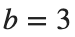
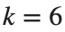
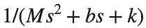
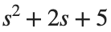

Control Engineering 1 · Week 04 · Transfer Function과 블록을 연결하기
본인 사본에서 코드와 작성란을 직접 수정하세요. 이름: ⟦직접 입력⟧ / 학번: ⟦직접 입력⟧
실행 방법
Live Editor에서 코드 안을 클릭하고 Run Section으로 현재 Section을 실행하세요(Windows/Linux Ctrl+Enter, Mac ⌘+Enter). Run은 문서 전체를 실행합니다. 설명·작성란은 직접 편집하세요.
처음에는 위에서부터 실행하고, 값을 바꾼 Section은 다시 실행하세요. 변수가 없다는 오류가 나면 앞 Section부터 실행하세요. 출력은 코드 아래 또는 오른쪽에 표시됩니다.
환경: MATLAB Online과 Control System Toolbox. Simulink 모델 실행에는 Simulink도 필요합니다.
1. Transfer Function 구성
계수는 높은 차수부터 입력합니다.
실행 전 예상: ⟦직접 입력⟧
G=tf(1,[1 2 5]);
T=feedback(G,1);
disp(G);disp(T);
assert(abs(dcgain(G)-.2)<1e-10);
직접 수행:
- ,

,
을 기계 모델의 Transfer Function
에 넣어 MATLAB 모델을 만드세요. - 사용한 Transfer Function을 적고, dcgain(G)와 손으로 계산한 를 나란히 기록하세요. 두 값의 일치 여부를 적으세요.
% ✍ 직접 작성: 아래에 본인 코드를 추가하세요.
바꾼 조건: ⟦직접 입력⟧
실제 결과: ⟦직접 입력⟧
예상과 차이 및 원인: ⟦직접 입력⟧
2. Block 연결과 응답
같은 시간축으로 비교합니다.
실행 전 예상: ⟦직접 입력⟧
G=tf(1,[1 2 5]);T=feedback(G,1);t=0:.01:10;
figure;step(G,T,t);legend('Open-loop','Unity feedback');grid on;
직접 수행:
- 기준 G=tf(1,[1 2 5])는 유지하고 인 음의 Feedback을 연결하세요.
- Closed-loop Transfer Function을 손으로 정리한 식과 feedback(G,2)의 결과를 나란히 적으세요.
- 두 식의 분모 계수를 같은 차수 순서로 적어 대조하세요. 일 때와 비교해 어느 계수가 달라졌는지도 표시하세요.
% ✍ 직접 작성: 아래에 본인 코드를 추가하세요.
바꾼 조건: ⟦직접 입력⟧
실제 결과: ⟦직접 입력⟧
예상과 차이 및 원인: ⟦직접 입력⟧
3. Simulink 모델 열기
함께 배포한 .slx를 MATLAB Drive에서 열거나 아래처럼 동일 모델을 만드세요.
실행 전 예상: ⟦직접 입력⟧
modelName='Control_Engineering_1_Week04_Block_Model';
if isfile([modelName '.slx'])
open_system(modelName);
else
disp('블로그 자료 모음에서 Week04 .slx 파일을 같은 폴더에 받으세요.');
end
직접 수행:
- Simulink에서 Step → Transfer Fcn → Scope를 연결하세요. 기준 G=tf(1,[1 2 5])에 대응하도록 분자는 [1], 분모는 [1 2 5]로 설정합니다.
- Step time=0, Final value=1, Stop time=10으로 실행하세요.
- Scope의 출력과 MATLAB의 step(G,0:0.01:10) 곡선을 나란히 제시하세요. 두 그림은 같은 시간 범위와 출력 축 범위로 놓고, 최종값과 곡선 형태가 일치하는지 적으세요. 이 Block Diagram은 Feedback을 연결하지 않은 G에 대응합니다.
% ✍ 직접 작성: 아래에 본인 코드를 추가하세요.
바꾼 조건: ⟦직접 입력⟧
실제 결과: ⟦직접 입력⟧
예상과 차이 및 원인: ⟦직접 입력⟧
반복 숙달과 제출 전 확인
앞의 직접 수행에서 비교한 조건 세 가지를 아래에 정리하세요. 이미 수행한 실험을 추가로 반복할 필요는 없습니다. 예상은 정확한 수치 대신 증가·감소 방향으로 적어도 됩니다.
반복 1 — 조건: ⟦직접 입력⟧ / 예상: ⟦직접 입력⟧ / 실제: ⟦직접 입력⟧
반복 2 — 조건: ⟦직접 입력⟧ / 예상: ⟦직접 입력⟧ / 실제: ⟦직접 입력⟧
반복 3 — 조건: ⟦직접 입력⟧ / 예상: ⟦직접 입력⟧ / 실제: ⟦직접 입력⟧
선택:
예: Transfer Function 분모의 계수 순서를 바꾼 경우
- 기준 tf(1,[1 2 5])와 계수 순서를 뒤집은 tf(1,[5 2 1])을 별도로 만드세요.
- 각 분모의 다항식과 DC Gain을 나란히 적으세요.

가 되도록 분모 vector만 [1 2 5]로 바꾸세요.
코드, 실제 Output·그래프, 직접 작성한 해석을 포함하세요. 제출은 KLAS를 이용하며 기한은 학기 일정과 최신 공지를 확인합니다.
파일명: 이름_학번_4주차.mlx.